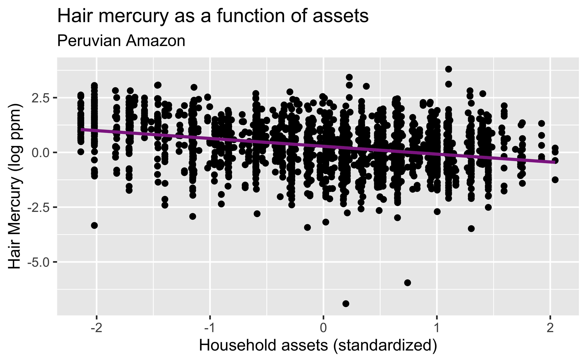
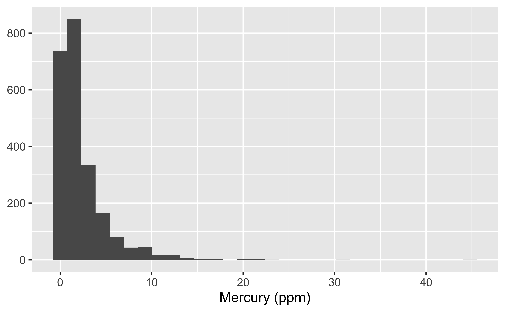
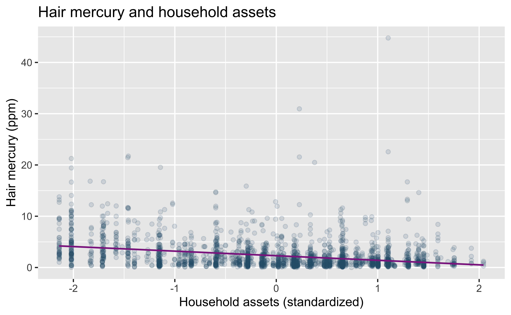
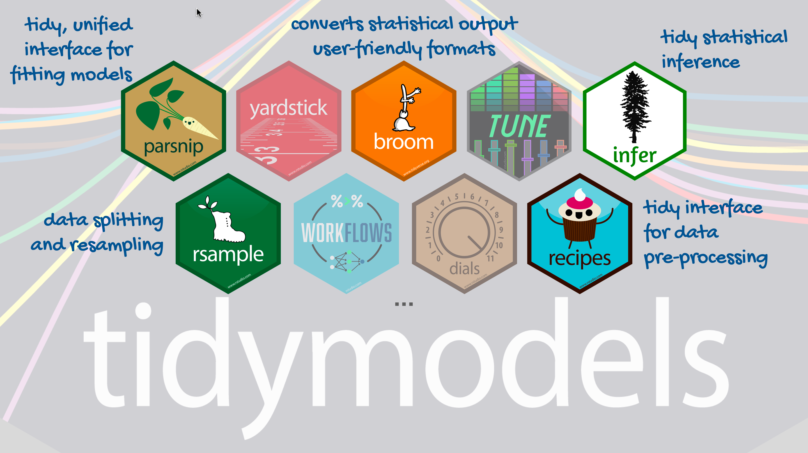
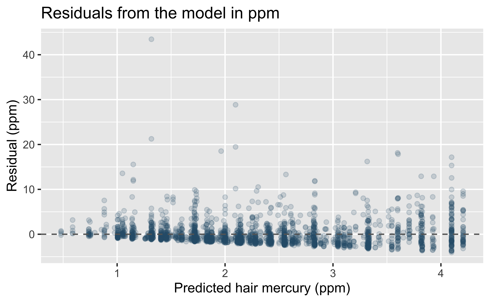

Are mercury concentrations in hair related to household socioeconomic position, as measured by assets?
library(tidyverse)library(tidymodels)library(readr)mercury <- readr::read_csv("../data/mercury_reg.csv")mercury <- mercury %>%# scale() subtracts the mean and divides by the SD to make the units "standard deviations" like a z-scoremutate(assets_sc=scale(SESassets)) %>%#another variable we may use latermutate(form_min_sc=scale(FM_buffer)) %>%#so I don't have to remember codingmutate(sex,sex_cat=ifelse(sex==1,"Male","Female")) %>%mutate(native,native_cat=ifelse(native==1,"Native","Non-native")) %>%mutate(hairHg=exp(lhairHg))
Goal: Predict mercury from assets
\[\widehat{y}_{i} = \widehat{\beta}_0 + \widehat{\beta}_1 \times x_{i}\] Here \(y_i\) represents log hair mercury for subject \(i\), and \(x_i\) represents standardized household assets.

How did we know to transform using the log?
In the previous notes, we saw that the distribution of Hg in hair had a strong right skew.
# lhairHg is the natural log of mercury in hair# this code puts it back on the ppm scaleggplot(data = mercury, aes(x =exp(lhairHg))) +geom_histogram() +labs(x ="Mercury (ppm)", y =NULL)

Assumptions of the Regression Model
The linear model actually does not require hair mercury itself to be approximately normal. Instead, it needs for the distribution of \(y\mid x\), the conditional distribution of hair mercury given all the predictor variables, to be aproximately normal. This is the same as saying that the errors in the model are approximately normally distributed.
It’s pretty easy to use a histogram to check the distribution of \(y\), but how about the distribution of \(y \mid x\)? That’s not terribly complicated once you know how to fit a regression model, and we will work through an example of how to check it in the modeling process.
Are household assets related to hair mercury?
Response: hair mercury concentration, in ppm (\(y_i\)), contained in the variable hairHg
Explanatory variable: a household assets score (\(x_i\)), contained in the variable assets_sc
A value of 0 on assets_sc means average assets in the dataset.
A value of 1 means one standard deviation above that average.
What pattern do you expect to see?
Look at the data first
ggplot(mercury, aes(x = assets_sc, y = hairHg)) +geom_point(alpha =0.15, color ="#285B78") +geom_smooth(method ="lm", se =FALSE, color ="#8E2C90") +labs(title ="Hair mercury and household assets",x ="Household assets (standardized)",y ="Hair mercury (ppm)" )

Does the line slope upward or downward? What does that tell us about the association?
Goal: Predict mercury from assets
The model itself is given by \[y_i=\beta_0+\beta_1x_i+\varepsilon_i,\] where \(\varepsilon_i\) represents a Gaussian error term, which implies that \(y_i\) itself (hair Hg) follows a Gaussian distribution conditional on the predictor \(x_i\) (assets).
The typical hypothesis of interest is \[H_0: \beta=0,\] which corresponds to no (linear) relationship between the predictor \(x\) and response \(y\), against the alternative \[H_0: \beta \neq 0.\]
The test statistic compares the estimated coefficient with its uncertainty:
\[
t = \frac{\widehat{\beta}_1-0}{\operatorname{SE}(\widehat{\beta}_1)}.
\]
Under \(H_0\),
\[
T \sim t_{n-p},
\] where \(p\) is the number of parameters in the mean specification of the model (here, \(p=2\) as we have \(\beta_0\) and \(\beta_1\) in the mean; \(n\) is the number of observations used to fit the model).
A large \(|t|\)—and correspondingly small \(p\)-value—provides evidence that \(X\) is associated with \(Y\).

Step 1: Specify model
linear_reg()
#> Linear Regression Model Specification (regression)
#>
#> Computational engine: lm
Step 2: Set model fitting engine
linear_reg() %>%set_engine("lm") # lm: linear model
#> Linear Regression Model Specification (regression)
#>
#> Computational engine: lm
Step 3: Fit model & estimate parameters
… using formula syntax
linear_reg() %>%set_engine("lm") %>%fit(hairHg ~ assets_sc, data = mercury)
The \(\widehat{y}\) is read “y-hat” and indicates that we are dealing with a model-predicted value rather than the actual observation in the data. Whenever we have a predicted or estimated value, such as \(\widehat{\text{hairHg}}_i\) or \(\widehat{\beta}_1\), it will wear a hat to remind us that it is an estimate and not an observed value.
A tidy look at model output
linear_reg() %>%set_engine("lm") %>%fit(hairHg ~ assets_sc, data = mercury) %>%tidy(conf.int=TRUE)
The key quantity here is the slope for assets, which represents the relationship between household assets and hair mercury. The estimate and standard error provided in the output are used to evaluate the hypothesis \(H_0: \beta_1=0\), which states that there is no (linear) relationship between assets and mercury. The p-value for this hypothesis test is given by the p.value column for the asset row; the statistic column is calculated by dividing the estimate column entries by their standard errors. We have to do more digging to get the right degrees of freedom for the test, though.
A tidy look at model output
linear_reg() %>%set_engine("lm") %>%fit(hairHg ~ assets_sc, data = mercury) %>%tidy(conf.int=TRUE)
We can also look at the 95% confidence interval for \(\beta_1\), which is given here by \((-1.01,-0.78)\) – because it does not contain the null value 0, we can say there is evidence of a relationship between assets and hair mercury.
A closer look at model output
The tidy output sweeps a few quantities under the rug, but we can tease them out using the glance function from broom instead.
Hgfit <-linear_reg() %>%#naming my model! remember for later!set_engine("lm") %>%fit(hairHg ~ assets_sc, data = mercury)Hgfit %>%tidy(conf.int=TRUE)
Here we see the \(df=n-p\) for the t-test in the df.residual column. nobs contains the number of observations used in model fitting. So \(n-p=2300-2=2298\).
Note a different statistic is presented here – it is the square of the statistic from tidy (there was some rounding). If you take a regression course, you will learn this statistic, the square of the t-statistic, follows an \(F\) distribution, which is widely used in linear models.
estimate: the fitted change in ppm for a one-standard-deviation increase in assets;
conf.low / conf.high: endpoints of a 95% confidence interval for that slope;
p.value: a test of \(H_0:\beta_1 = 0\) against \(H_A:\beta_1 \ne 0\).
Before relying on the usual confidence interval and test, check the model’s assumptions.
Can we trust the model? Check the residuals!
We saved the model as the object Hgfit on a prior slide. Tidymodels is going to make it very easy for me to join information from the fitted models, including the predicted mercury levels (.fitted) and the residuals (.resid), to my original data, using the append() function. Then, to look at how well the model does, I create a plot with the predicted mercury levels on the x-axis and the residuals on the y-axis, and I hope to see a lot of random scatter centered around the value 0.
augment(Hgfit$fit) %>%ggplot(aes(x = .fitted, y = .resid)) +geom_point(alpha =0.18, color ="#285B78") +geom_hline(yintercept =0, linetype ="dashed", color ="gray40") +labs(x ="Predicted hair mercury (ppm)",y ="Residual (ppm)",title ="Residuals from the model in ppm" )

Is the vertical spread of the residuals about the same across fitted values?
Are the residuals approximately normal?
We can also check a Q-Q (quantile-quantile) plot, which compares the model’s residuals with values expected from a normal distribution, by plotting the quantiles of the residuals in our sample against the quantiles of a normal distribution. Points roughly following the line suggest approximate normality; clear curves or departures at the ends suggest the residuals are not normally distributed. What do you think here?